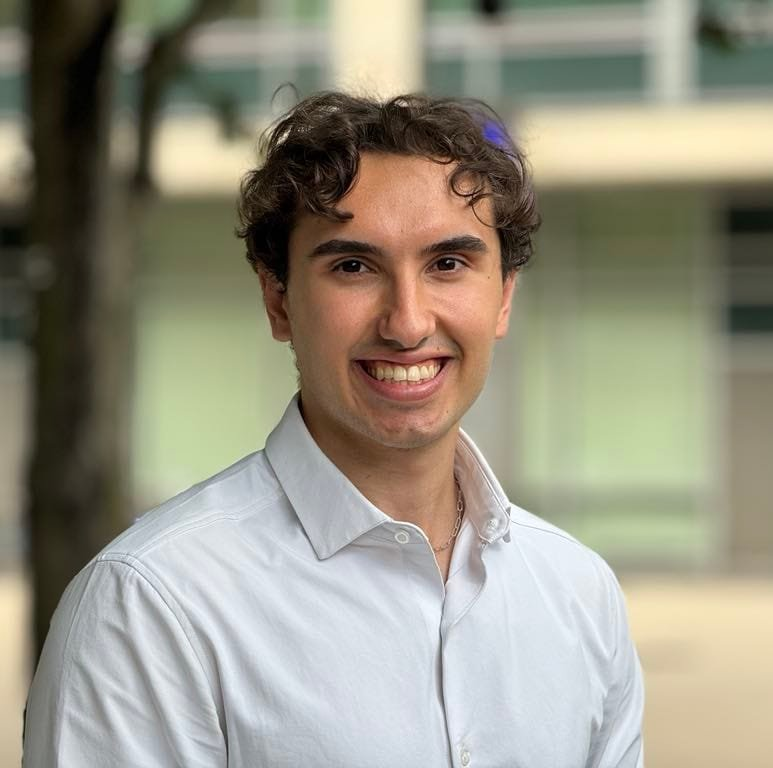
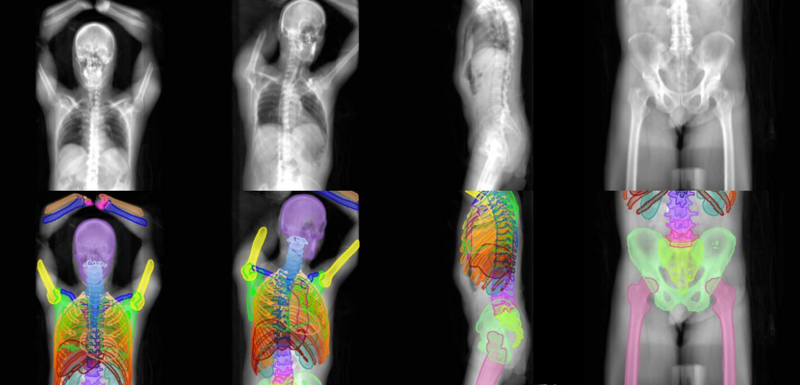
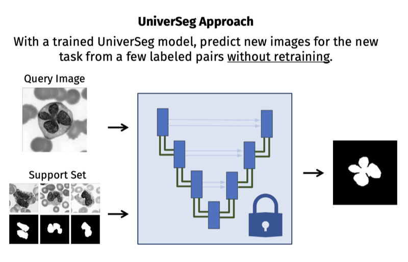
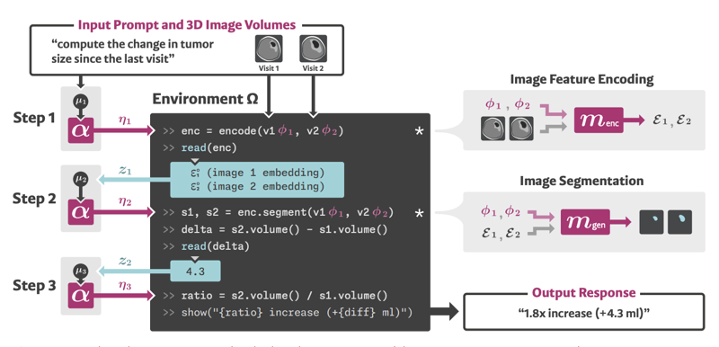
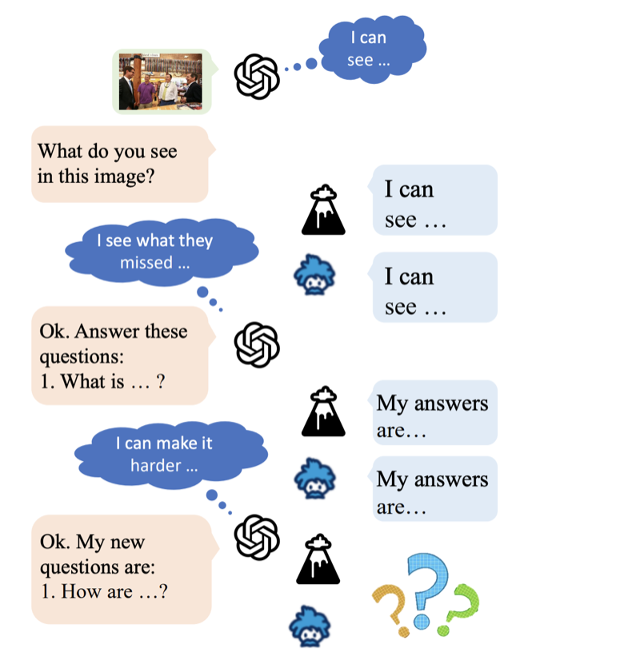
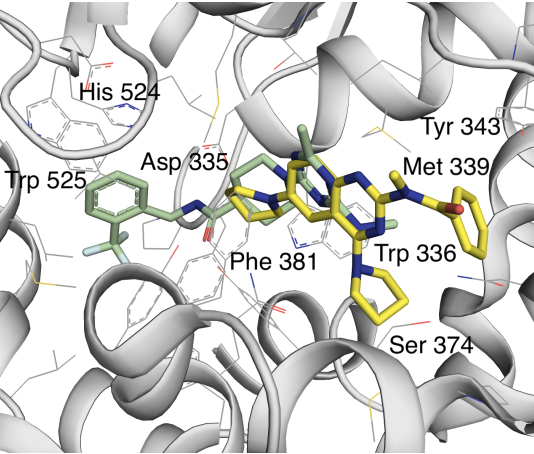
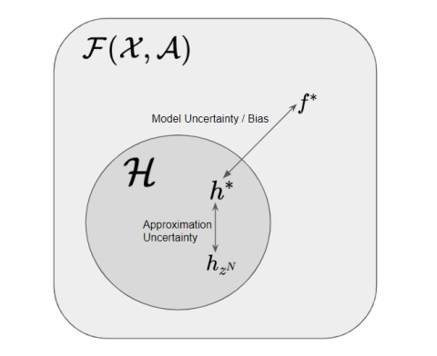
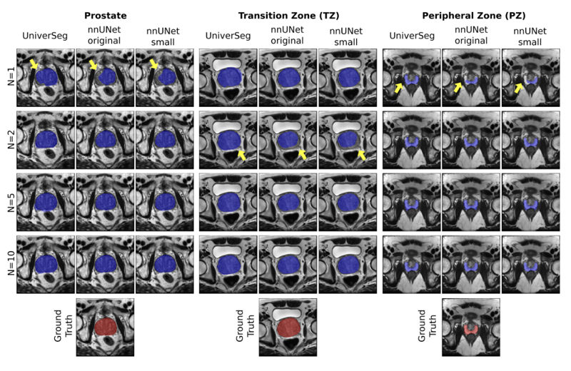

Victor Ion Butoi
PhD Student
Massachusetts Institute of Technology
EECS,
CSAIL
vbutoi@mit.edu
Last updated: August 2026
Greetings! I am a 5th year Computer Science PhD student at MIT fortunate enough to be advised by Professors Adrian Dalca and John Guttag as a part of the Clinical and Applied Machine Learning (CAML) Group. I am interested in problems lying at the core of machine learning and computer vision, often with applications to healthcare. I'm very involved in the ML community here at MIT. Previously, I was a head TA for our Deep Learning course (over 600 students!) and a co-organizer of ML Tea.
My work has been supported by the NSF Graduate Research Fellowship.
Previously, I studied Computer Science at Cornell University advised by Mert Sabuncu, where I was a Merrill Presidential Scholar for the Computer Science department and a Tanner-Dean Scholar for the School of Arts and Sciences.
I've also had the chance to intern at some very cool places doing cool things — see the bio below. If you are interested in collaborating, please do reach out!

Selected Works

Victor Ion Butoi, Vivek Gopalakrishnan, John V. Guttag, Adrian V. Dalca, Neel Dey

Victor Ion Butoi*, Jose J. Ortiz*, Tianyu Ma, John Guttag, Mert R. Sabuncu, Adrian V. Dalca

Andrew Hoopes, Victor Ion Butoi, John Guttag, Adrian V. Dalca
Other Works


Maksym Korablyov et al.


Heejong Kim, Victor Ion Butoi, Mert R. Sabuncu, Adrian V. Dalca
Reviewer Service
AutoML, MIDL, ICLR, ICML, NeurIPS
Bio
Previously, I have been lucky enough to work with:
- Evan Hernandez at OpenEvidence on evals for clinical VLM models.
- Meet Shah and Scott Roy at Waymo on inference-time embedding flexibility for 3D object detection.
- Dr. Leonid Karlinsky and Dr. Rogerio Feris at IBM on fusing large image and language models.
- Dr. Felix Wu and Prof. Kilian Weinberger at ASAPP on sequence modeling using state-space models.
- Prof. Yoshua Bengio and Prof. Pierre-Luc Bacon at MILA on ML for drug discovery and uncertainty quantification.
- Dr. Florin Ghesu at Siemens Healthineers on biomedical imaging for lung diagnostics.